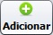
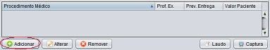
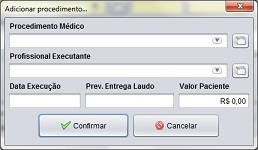
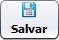
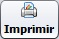

O cadastro da ficha de atendimento é o primeiro passo para o atendimento de um paciente. É a partir da ficha de atendimento cadastrada que o profissional executante irá dar continuidade no atendimento, realizando os exames e procedimentos médicos necessários.
Para iniciar o cadastro, abra a rotina pelo menu Operações » Atendimento, ou pelo ícone de atalho da tela inicial, ou ainda pela tecla de atalho Ctrl+Alt+A.
Para incluir uma nova ficha de atendimento, clique no botão  e preencha os campos do formulário. Veja as dicas de preenchimento a seguir:
Os campos código e data são preenchidos automaticamente pelo sistema.
Convênio: selecione o convênio do paciente a ser atendido. É através do convênio selecionado que o sistema irá sugerir os preços dos exames e procedimentos para o atendimento.
Paciente: preencha as informações do paciente, tais como nome, data de nascimento, sexo, e telefone (opcional). Note que o campo paciente é do tipo auto completar. Se o paciente já estiver cadastrado, basta selecioná-lo, que o sistema irá preencher os demais campos com os dados do mesmo. Caso contrário, o sistema irá cadastrar um novo paciente com os dados informados nestes campos.
Profissional Solicitante: caso o paciente tenha vindo encaminhado por outro médico, defina as informações do mesmo. Selecione o conselho, estado, digite o número registrado no conselho, e o nome do profissional. Caso contrário, não há necessidade de preencher estes campos.
|

Figura A - Grid de Exames e Procedimentos Médicos do Atendimento. |

Figura B - Tela para adicionar procedimentos. |
Na opção Gravar procedimento em vídeo marque sim para que o sistema avise o médico que o exame deve ser gravado em vídeo. Marque não caso contrário.
Você poderá adicionar observações e informações úteis ao atendimento. Estas informações irão aparecer ao médico no momento em que for realizar o exame.
Após preencher o formulário, clique no botão .
Para fazer a impressão da ficha de atendimento, clique no botão  e aguarde o sistema carregar a impressão. Confira os dados e clique no botão da impressora.